Окабе Ринтаро
Восемнадцатилетний студент первого курса Токийского электротехнического университета,
но уже ощущает себя не только гениальным, но и,
как это принято у гениев, — сумасшедшим учёным.
Доказывает это он рассказами о таинственной «организации»,
которая неусыпно следит за студентом. Основатель «Лаборатории гаджетов будущего».
Любит поговорить по телефону сам с собой и посмеяться как настоящий безумец.
Его не всегда устраивает собственное имя, и он зовёт себя Кёма Хооин,
что можно перевести как «Феникс жестокой реальности».
А вот его подруга детства Маюри (позже к ней присоединяется Дару)
называет гения «Окарин», просто соединив первые буквы его имени и фамилии.
Практически не выходит из своей «Лаборатории гаджетов будущего», поэтому его легко издалека
узнать по белому лабораторному халату.
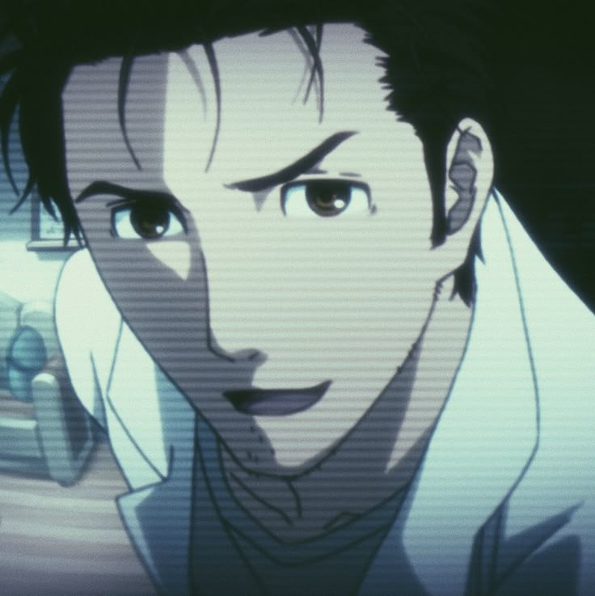
Маюри Шиина
Девушка, в свои шестнадцать лет ставшая членом
«Лаборатории гаджетов будущего» под номером «002», сразу за её главой.
А всё потому, что она неизменная подруга детства Ринтаро,
и за это имеет право называть его лично придуманным именем «Окарин».
Себя же называет «Маюси». Немного легкомысленна, что может быть следствием
её увлечения — косплея, для которого она любит придумывать и шить разнообразные костюмы.
Кроме того, Ринтаро про себя шутливо удивляется: «Похоже, у неё действительно ветер в голове».
Но, по его же словам, несмотря на всю её несерьёзность и глуповатость,
Маюри способна, как никто другой, подбодрить и будет рядом,
если тебе это нужно. Не сидит ни у кого на шее, самостоятельно подрабатывает в мэйд-кафе,
где официантки наряжены в костюмы горничных.
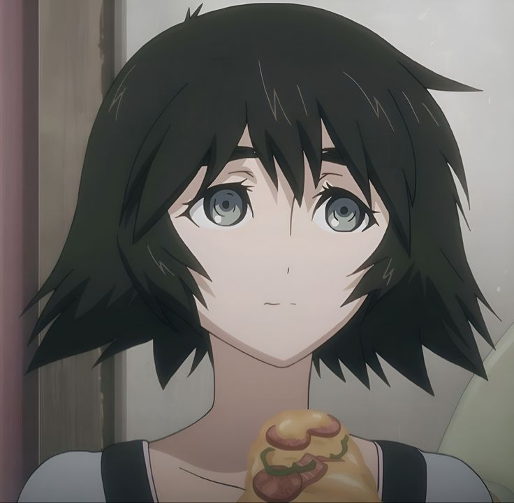
Итару Хашида
Известный под прозвищем друзей Дару — девятнадцатилетний подросток,
который учится на первом курсе Токийского электротехнического университета.
Также является членом «Лаборатории гаджетов будущего»,
занесённый в список под номером «003», где его «специализация» — хакерские взломы.
Ведь, несмотря на юный возраст, Дару отлично разбирается и в программном,
и в аппаратном обеспечениях компьютера. Но эти умения никак не помогают ему в личной жизни.
Неуверенный в себе с излишним весом, Дару просто боится людей и общается только с помощью компьютера.
Для моральной поддержки выбрал культуру отаку. Дару не социопат и не опасен для общества.
Он самостоятельно выбирает нетрадиционный образ жизни вне активного взаимодействия
с другими людьми. Он сам навешивает на себя ярлык отаку. Это юношеский протест и
своеобразный вызов, за которым на самом деле кроется ранимое сердце. И если бы нашёлся неравнодушный
человек, он бы смог расшевелить Дару, выведя его из берлоги в люди.
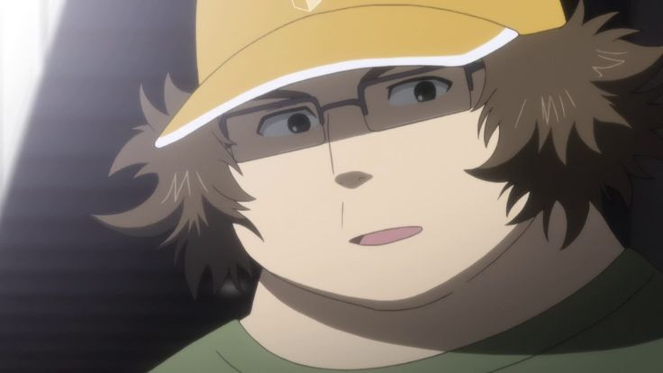
Макисе Курису
Член «Лаборатории гаджетов будущего» № 004.
Возраст — 18 лет. Талантливая исследовательница неврологии в американском университете.
Когда ей было 17 лет, её исследование было опубликовано во всемирно-известном журнале «Science»
(в аниме название заменено на «Sciency»). Окабэ часто называет её
ассистентом или придуманным им прозвищем — Кристина (саму Курису это очень раздражает).
На первый взгляд — спокойная девушка, краснеет, если кто-то
незнакомый приближается к ней слишком близко, но в душе — полная противоположность:
однажды заставила Окарина стоять на коленях три часа подряд, при этом грозясь ударить его книгой.
Всегда стоит на своём, не любит проигрывать и не любит, когда кто-то пытается управлять ею.
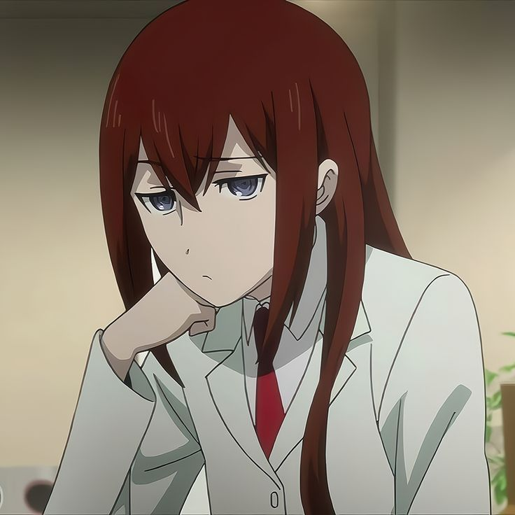
Моэка Кирю
Красивая, высокая девушка 20 лет. Познакомилась с Ринтаро Окабэ
в Акихабаре, когда тот бродил по городу в поисках ретро-компьютера
IBN-5100. На тот момент Моэка так же, как и Ринтаро, пыталась добыть
информацию об IBN-5100. Общая заинтересованность к этому компьютеру
и натолкнула героев сотрудничать вместе. Моэка — очень застенчивая
и не разговорчивая особа, поэтому предпочитает общаться с помощью
телефонной переписки (даже при встрече лицом к лицу предпочитает общаться через телефон).
Обладает молниеносной скоростью набора текста на кнопочном телефоне.
Из-за этой способности Окабэ дал ей прозвище «Сверкающий палец»,
а позже позволил девушке стать членом «Лаборатории гаджетов будущего» № 005.
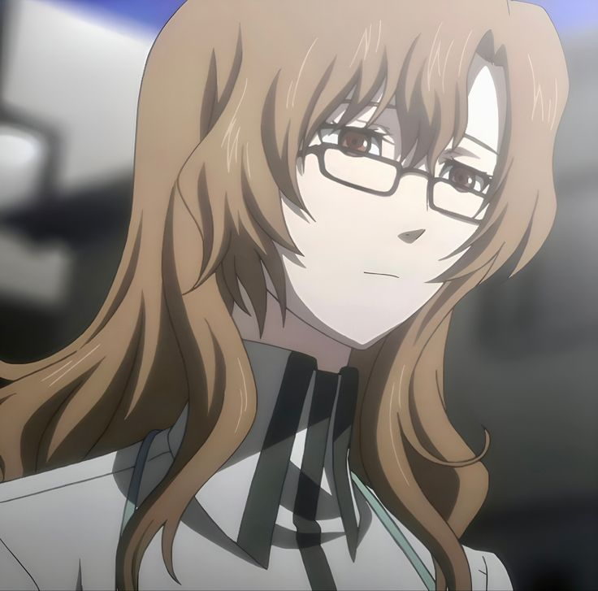
Моэка стала первым из «новичков», кто получил возможность отправить D-мэйл.
После его отправки девушка пропадает, а вместе с ней и IBN-5100,
который был в лаборатории. Все из-за того,
что Моэка соврала о содержании своего D-мэйла и вообще о том,
кто она такая. На самом деле Моэка Кирю — агент «СЕРН»-а с позывным «М4»,
который выполняет задание по поиску IBN-5100 и дальнейшей передачи его командованию.
Узнав от Окабэ, что компьютер находился в храме, отправляет D-мэйл самой
себе в прошлое, в котором указывает местонахождение редкого ПК. В одной
из «мировых» линий Кирю наведывается в «Лабораторию гаджетов будущего»
с группой наемников, с целью изъятия «машины для прыжков во времени»
и взятия под стражу Ринтаро, Курису и Дару. После, именно Моэка
безжалостно убивает «ненужную» Маюри.
В «мировой» линии, где Окабэ пытается отменить D-мэйл Моэки,
выясняется, что девушка является психически неуравновешенным человеком,
склонным к суициду (именно таких и нанимает «СЕРН» для мелкой работы и
последующего убийства с целью сохранения секретной информации).
В конце сериала (в истинной концовке одноименной новеллы) стала работать
в мастерской «Трубки Брауна».
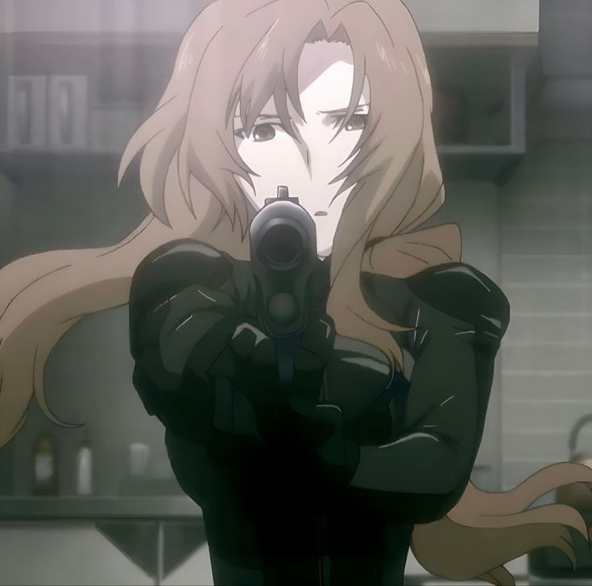
Рукако Урушибара
Молодой привлекательный парень шестнадцати лет.
Помогает отцу в храме. Впервые предстаёт в одежде служителя храма,
однако, почему-то, в женском одеянии, характерной для мико (служительниц храма).
Видимо, потому что обладает девичьей внешностью. Хороший друг Маюри.
Из-за того, что обладает идеальной женской фигурой, Маюри постоянно упрашивает
его стать косплеером, на что тот из-за своей стеснительности всегда отвечает отказом.
Руке нравится подыгрывать чунибё-выходкам Ринтаро Окабэ, показывая это своей
старательностью по отношению к тренировкам с игрушечным мечом, который Окабэ подарил Урушибаре.
Возможно, испытывает любовные чувства к Окабэ, после того как тот спас
его от хулиганов. Становится членом «Лаборатории гаджетов будущего» № 006,
благодаря тому, что в тайне подслушал о возможностях «мобиловолновки (название временное)».
Просит у главных героев отправить D-мейл в прошлое для того, чтобы повлиять на свою мать
во время вынашивания ребёнка и стать девушкой. D-мейл был отправлен его матери на пейджер,
сумевший изменить его пол. Однако Ринтаро не смог этого понять сразу, так как внешность Руки почти не изменилась.
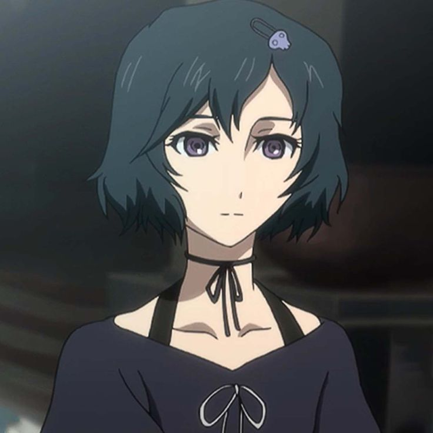
Румихо Акиха (Фейрис НянНян)
Она же Фейрис — ученица второго года частной академии «Канария».
Работает неполный рабочий день в мэйд-кафе под названием «MayQueen+Nyan2» (дословно — «Дева-королева + Ня-2»)
и является там самой популярной официанткой. Маюри работает в том же заведении вместе с ней.
Выглядит как ребёнок, ведёт себя по-детски. Неловко «някает», когда говорит.
Может заглянуть человеку в сердце, просто посмотрев ему в глаза. Уважает и сильно любит своего отца. Посылает d-mail своему отцу,
чтобы предотвратить его смерть. В линии времени происходят изменения,
её отец остаётся жив и не даёт ей открыть «MayQueen+Nyan2» — мэйд-кафе,
которое развило культуру моэ в Акихабаре, поэтому город не имеет ничего связанного с моэ в этой линии времени.
Сузуха Амане
Весёлая девушка с косичками восемнадцати лет.
Устраивается на неполный рабочий день в мастерскую «Трубки Брауна»,
владельцем которой является Юго Тэннодзи — квартиродатель Ринтаро.
Часто отлынивает от работы, всё время ковыряясь со своим велосипедом,
который девушка очень любит. Хорошо ладит со всеми членами
«Лаборатории гаджетов будущего», кроме Курису Макисэ.
Позже становится частью команды Окабэ № 008: так как из окна лаборатории,
которая находится над мастерской «Трубки Брауна», слышны все разговоры,
Сузуха узнала, чем занимаются ребята наверху, после чего Ринтаро был
вынужден сделать её участником. Центральный персонаж манги «Врата Штейна: Восстание "Валькирии"».
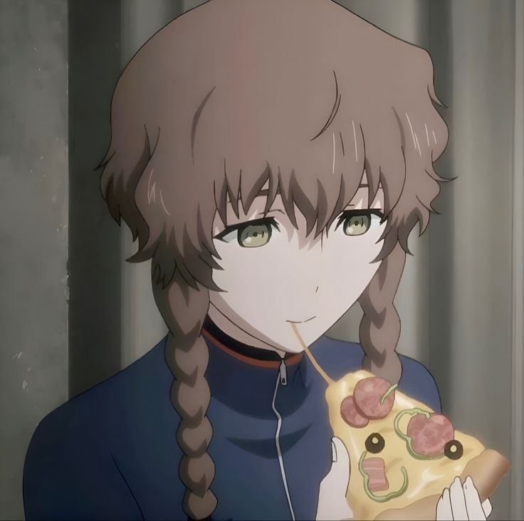
На самом деле Сузуха — не обычная молодая девушка, а самый настоящий
путешественник во времени из 2036 года. Она и есть тот
самый Джон Тайтор, с которым переписывался Окабе. Её заданием является
добыча IBN-5100 в 1975 году и передача его силам сопротивления будущего.
Так как её машина времени способна перемещаться только в прошлое, девушка
решила сперва переместиться в 2010 год, чтобы отыскать своего отца (умершего в 2036 году).
Позже находит его в лице Дару. Также передает Окабе прибор для измерения временного отклонения.
Всё вышеперечисленное описание относится к Судзухе из «альфа»-временной линии.
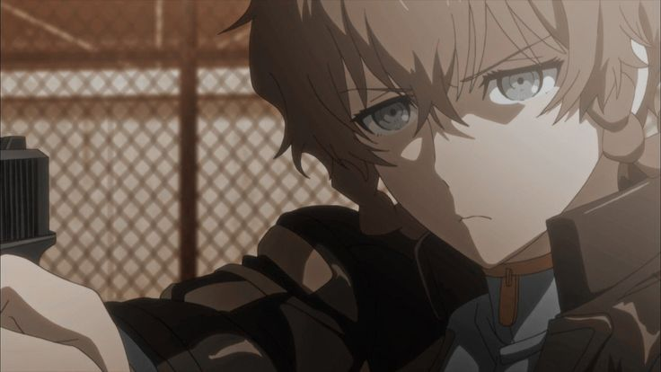
Во временной линии «бета» Сузуха также является путешественником во времени.
Отличия только в задании девушки и в машине времени, которой она пользуется.
Задание Амане линии «бета» заключается в предотвращении Третьей мировой войны,
начатой из-за созданной технологии прыжков во времени. А её машина времени способна
перемещаться как в прошлое, так и в будущее. Из чего следует, что Сузуха — тот самый
Джон Тайтор из 2000 года, о котором Окабэ услышал, учась ещё в школе. Именно эта Сузуха
помогает Ринтаро спасти Курису и достигнуть временной линии, названной «Врата Штейна».
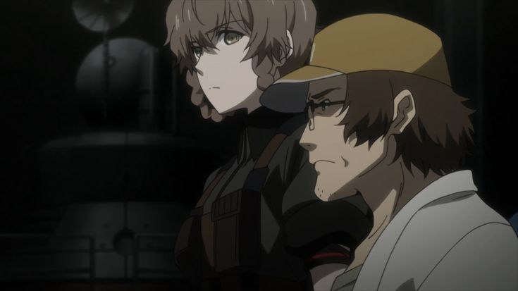
Махо Хияджо
Старший научный сотрудник лаборатории нейронаук в университете Виктор Кондрия.
Работает помощником у профессора Алексиса Лескинена. Специализация Махо — нейробиология и искусственный интеллект.
В процессе работы сближается с Курису и начинает относиться к ней с бо́льшим уважением, вопреки постоянным спорам.
Из-за маленького роста и соответствующего телосложения люди часто принимают Махо за маленькую девочку,
несмотря на то, что ей уже больше двадцати лет. Сердится, когда окружающие ошибочно воспринимают
её как школьницу, не подозревая при этом об её истинном возрасте и роде деятельности, но, тем не менее,
смотрит на это с пониманием.
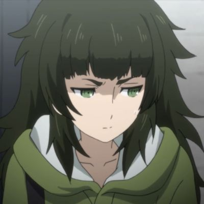